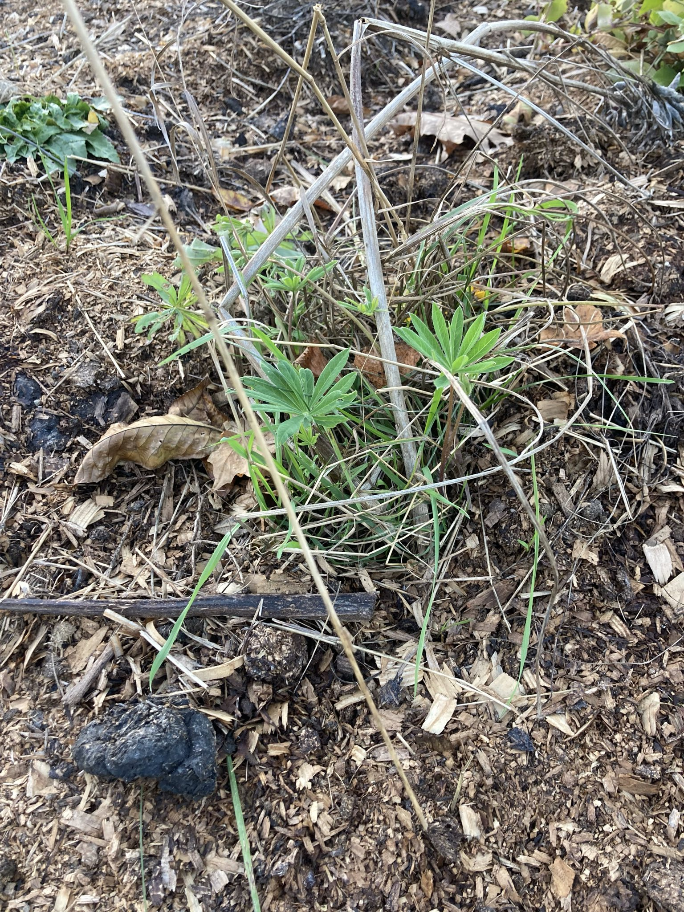
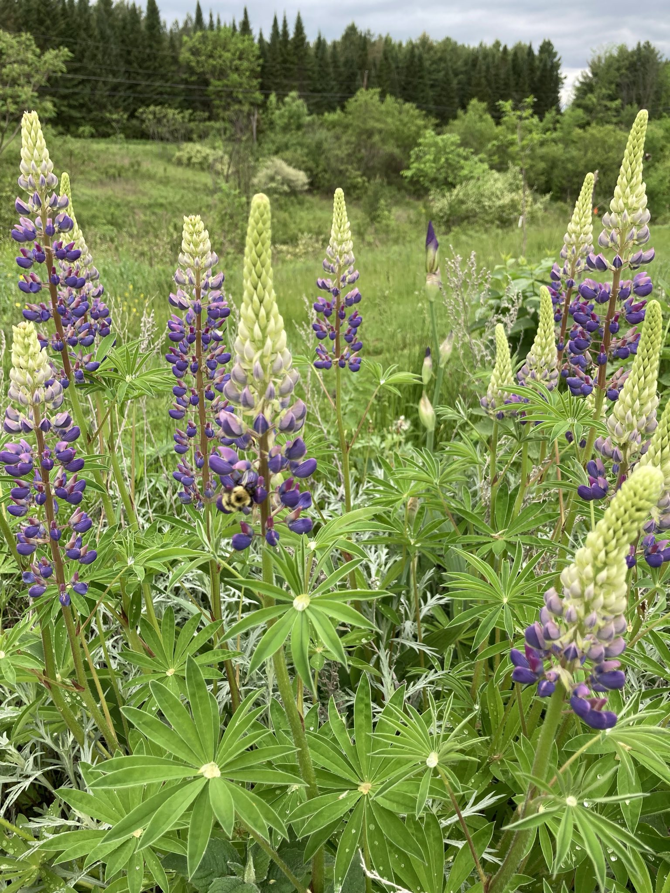
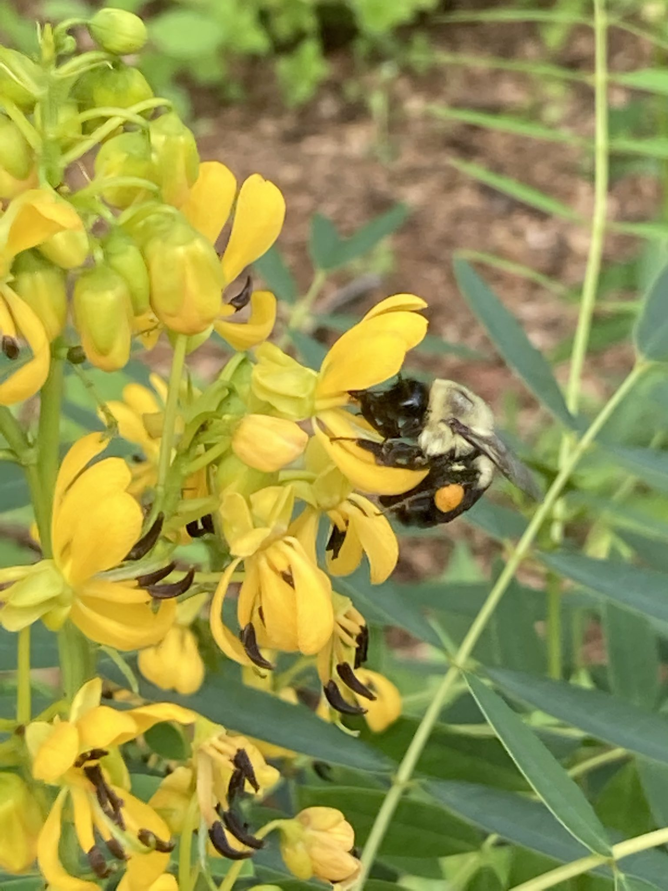

January 2022 · Part 2
Clouded Sulphur Recovery: A Wild Collection (Part 2)
For years the clouded sulphur has enjoyed a thriving existence on Lewis Creek rd in lovely East Charlotte. Thousands traversed our historic dirt road so much so that neighbors pulling in and out of their driveways would run them over just to get home or travel the road. Last year I counted five clouded sulphurs. In 2022, I plan to install 12 small gardens along the one mile stretch with just three plants each (to start.) Admittedly, I only have one neighbor additional neighbor on board, four who I need permission from, and five who let me plant without question. Side note: Who turns down a free garden anyway?

Three herbaceous perennials are key for the clouded sulphur: Wild lupine, wild senna, and white wild indigo. You can join me in the grand experiment by planting this “wild collection” in your own backyard.
Spring bloom: Wild Lupine
Wild lupine is a perennial favorite, literally, children’s books have been written about this plant. If you don’t have it in your garden put it on your list. The bloom doesn’t last long, however you can deadhead the plant (remove spent flowers) and often it will bloom again. Lupine is showy with a lovely bluish-purple color, and a rather striking flower that will emerge in mid-spring. ‘Sundial’ lupine is native to Vermont. The plant is about two feet tall a great addition to the edge of a garden. After the flowers die back, I tend forget about the plant only noting the foliage on occasion which isn’t particularly remarkable. According to National Wildlife Plant Finder, Lupine is host to 24 different butterflies and moths. This list includes: The endangered Karner Blue, Silvery-Blue, Eastern Tailed Blue, Orange and clouded sulphur, and more. Remember that the butterflies and moths that this plant hosts require the green foliage for sustenance so try to document what you see even after the lovely flowers have disappeared. Where do you get native lupine? We have a some great plant sales in Monkton at the Federated Church and the Charlotte Senior Center that will likely carry divisions from local gardens. Red Wagon Plants, Horsfords, and Full Circle Gardens will likely carry these plants as part of their native plant offerings.

Summer: Wild Senna
This amazing plant was found across New England years ago and is now extremely rare and threatened in the state of Vermont. This host plant to the Clouded sulphur is extremely attractive to bees and pollinators alike. If you live in Northern Vermont you can purchase this at Horsford Nursery in Charlotte for $13! Last year I added 10 of these lovely plants to my own perennial garden, not to mention the Butterfly Garden at Quaker’s Corners, The Pollinator Garden at Fairwinds Farm, The Rotax and Roscoe Garden, The Butterfly Garden at Quinlan Bridge, and The Friendship Garden. This plant can be used as a garden hedges as they can take the form of a bush, and develop long, interesting seed pods that are delectable to wild turkeys.

Late Summer, Early Fall: White Wild Indigo
I’m going to say something that fellow Master Gardeners may not agree with...I’m planting white wild indigo for the Clouded sulphur. This plant is found throughout New York State, just across the lake. I am planning on planting this in our neighborhood gardens and my own garden, limiting it’s ‘introduction’ to cultivated garden locations. White Wild Indigo is beautiful and I’m looking to see if/when it produces and enviably attracts Clouded sulphur caterpillars. Here is a little more information on the Prairie Moon website, along with a photo.
Filed in the garden journal · January 2022 · Part 2